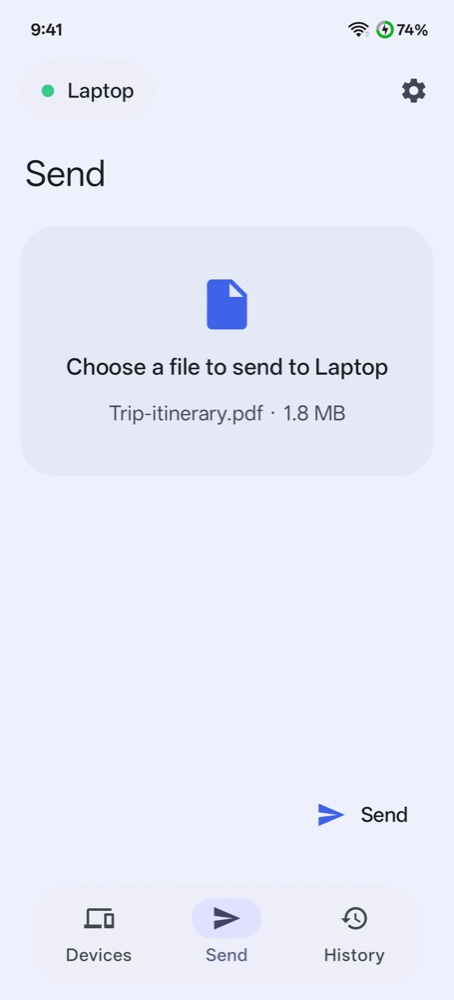
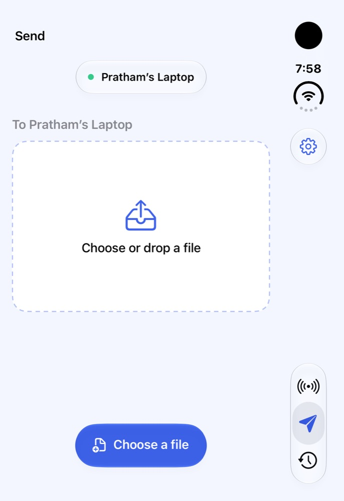

Screen mirroring
See your Android screen on your Mac first, then your Mac screen on your phone.
LinkBridge moves files straight from one device to the other on your network. No account, no cloud, no cable.
Free test builds, version 0.2.0. Not in the App Store or Google Play yet, so a couple of install steps apply.
Check that the phone shows the same code.
Both devices need to be on the same Wi-Fi network.
Get LinkBridge on your Mac and your phone, and open it on each.
Start pairing on the phone. Check the six-digit code matches on both screens, then approve it on the Mac.
Pick up to 50 files on one device. Accept them on the other, and they land in Downloads › LinkBridge.


| Feature | Mac | Android | iPhone |
|---|---|---|---|
| Find nearby devices | Yes | Yes | Yes |
| Pair with a six-digit code | Approves pairing | Starts pairing with a Mac | Starts pairing with a Mac |
| Send files | Yes | Yes | Yes |
| Receive files | Yes | Yes, also in the background | Not yet |
iPhone and Android can't pair with each other yet. The iPhone app isn't available to download yet.
LinkBridge has no servers. Files travel between your devices and nowhere else.
Files go straight from one device to the other. Nothing is uploaded to the internet.
There's nothing to sign up for or log in to.
Transfers use TLS with a key made from the secret your devices agree on when you pair.
A device you haven't paired with can't send you files, and you accept each transfer before it's saved.
The apps contain no analytics, ads or crash reporters.
The privacy policy explains what the apps and this website do with data.
Planned, not in the app yet. Both will use the pairing you already have.
See your Android screen on your Mac first, then your Mac screen on your phone.
Send files when there's no shared Wi-Fi network around.
These are test builds from outside the app stores, so your devices ask you to confirm before the first launch.
Apple silicon Mac with macOS 26 or later. Intel Macs aren't supported.
LinkBridge lives in the menu bar. Click its icon there to open it.
The Open Anyway step is needed because the test build isn't notarized by Apple. The Mac App Store version won't need it.
Download for MacAndroid 12 or later
Had an earlier test build? Uninstall it first. This version is signed with a new key, so it can't install over the old one, and you'll need to pair again.
You can turn the unknown-apps setting off again after installing. The Google Play version won't need it.
Download for AndroidBefore a new app can launch, Google Play needs at least 12 testers to stay in a closed test for 14 days in a row. If you have an Android phone, join with the email of your Google account.
Yes.
No. Your devices need to be on the same Wi-Fi network, and files go directly between them.
Into a LinkBridge folder inside Downloads, on both the Mac and Android.
Up to 50 in one go.
Apple silicon Macs with macOS 26 or later (Intel Macs aren't supported), and Android phones with Android 12 or later. An iPhone app (iOS 26 or later) that can send to a Mac is built but not available to download yet.
Not yet. Both pair with a Mac today.
The test build isn't notarized by Apple yet. Follow the Mac install steps above to open it. The App Store version won't show this warning.
After testing. The Google Play closed test comes first, which is where testers help.